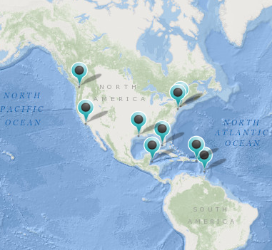
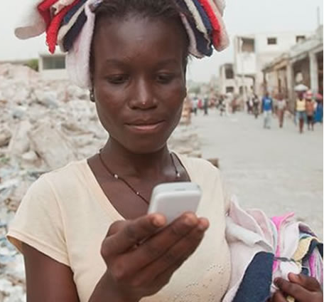

Home
Home
Featured content! 
How do we define risk? What events do we need to prepare for? Explore the components of risk and identify the hazards that face your community.
Featured Content
Rising Seas
Explore the challenges of coastal resilience and identify vulnerable communities.
How does a city prepare and respond to disasters? What can you do to make sure you're ready? Play games and read comics to learn more about planning for disasters.
Featured Content
Stop Disasters Game
Step into the role of a disaster planner and save the city!
How can you become better connected and more resilient? Who are the different groups and organizations that contribute to a resilient community? Explore the networks of resilience and find out how to stay connected.
Featured Content
Google Crisis Map
Stay up to date on the latest disaster information.
